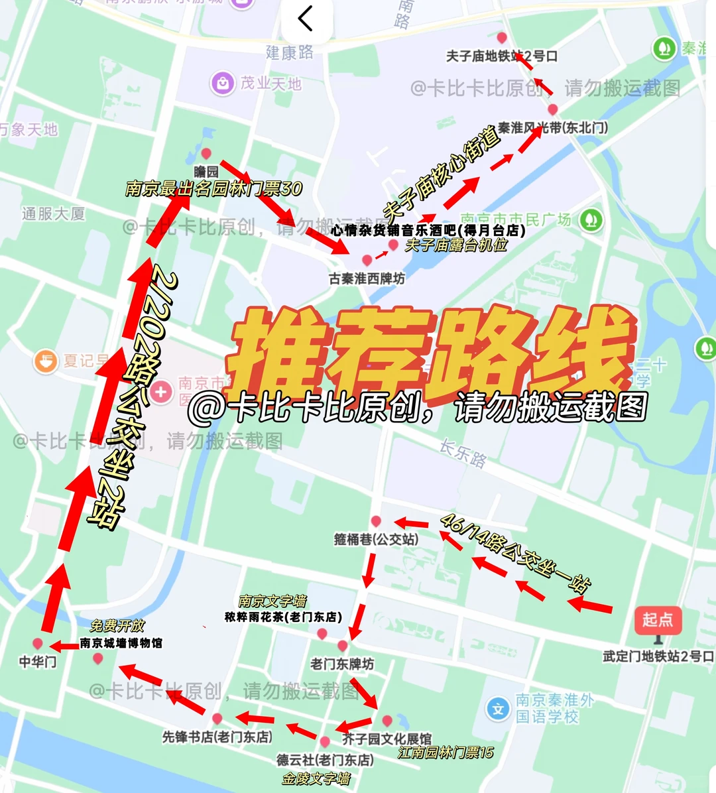

老门东 → 城墙博物馆 → 中华门 2 小时 20 分 Day1 重点
历史街区型商业文化区 · 城南民居 · 免费
历史街区型商业文化区，位于中华门城堡以东、明城墙脚下。「老门东」这个名字来自它相对「门西」的位置——中华门以东的城南片区，历史上是南京手工业与商贾最密集的地方。街区按修旧如旧的方式重建，马头墙、砖雕门罩、石板路、老井都沿用南京城南民居的做法，不是凭空造的古街。
核心看点是骏惠书屋——整体迁建而来的徽派建筑，木雕梁架极为精细，现为书店；芥子园是李渔故居旧址上重建的小园林；沿街的砖雕门楼与老墙门也值得逐个看。傍晚灯笼亮起后，青砖与暖光形成很强的层次感，比白天上镜得多。
本段按你找的「11 站单向动线」重排：武定门地铁站 2 号口 → 公交 46/14 路 → 箍桶巷公交站 → 老门东牌坊 → 南京文字墙 → 芥子园 → 金陵文字墙（德云社） → 先锋书店 → 城墙博物馆 → 中华门 → 公交 2/202 路 → 瞻园西门 → 瞻园 → 古秦淮西牌坊 → 得月台 → 秦淮风光带东北门 → 夫子庙地铁站 2 号口。全程单向、不回头，从老门东一路往西北推到夫子庙，最后在地铁口收尾。
游览策略：一条主脊 + 两条文字墙支线，顺着走不回头。老门东的巷子是网格状的，乱走很容易在「三条营—边营—张家衙」之间来回绕，把时间耗在同质的小店上。正确做法是沿主脊（牌坊 → 箍桶巷）往里推，两个文字墙分别插在牌坊后与德云社旁，再从西端出街区去城墙博物馆与中华门，这样每个点都只经过一次：
- ① 老门东牌坊（入口）——从箍桶巷口的大牌坊进，先在牌坊下拍一张全景，这里是街区唯一能一次框住马头墙群的位置。
- ② 南京文字墙 · 秾粹雨花茶（老门东店）——牌坊进来不远，灰砖墙上满铺黄色立体字（南京地名、方言词堆成一面墙），是老门东最出片的一面墙。免费、就在店门口，排队比金陵墙短很多，先拍这面。免费
- ③ 芥子园文化展馆——李渔故居旧址上重建的小园林，「芥子」即「小到能装进一粒芥子」。一进院子的尺度，亭、池、太湖石、曲廊一圈 15 分钟走完，是街区里唯一有「园林」层次的地方。门票 15 元
- ④ 德云社（老门东店）+ 金陵文字墙——深色木门上方金色「德云社」匾额，两侧刻对联。旁边的金陵文字墙是本线排队最狠的一处：很多人自带小板凳排，节假日 40 分钟起步。策略：先看队伍长度再决定——人多就只在外围侧拍（斜 45° 也能拍到「金陵」两个大字），把时间省给后面的中华门与瞻园。免费
- ⑤ 先锋书店（老门东店 / 骏惠书屋）——整体迁建而来的徽派建筑，木雕梁架与藻井是全场工艺最精的一处。进门先抬头看月梁，再逛书，顺便坐下歇脚。很多人只在门口拍个照就走，里面才是重点。
- ⑥ 南京城墙博物馆——街区西端出来往中华门方向走即到。免费、讲透城砖铭文（每块砖上都烧着烧制府县与工匠名，是明代的质量追溯制度），1 小时可看完；须提前 1 天预约，周一闭馆。免费 · 需预约
- ⑦ 中华门（瓮城）——世界现存规模最大的城墙瓮城，四道券门层层套叠，藏兵洞可容三千人。门票 50 元；只在免费区域（瓮城外广场、城墙根部）拍照已经很好看了，不想花钱就别买票，站在墙下仰拍马道与箭垛，气势足够。门票 50 元 · 可省
接驳：中华门堡垒 → 瞻园——在中华门外的公交站坐 2 路 / 202 路，到「中华路·瞻园路」站下车，旁边就是瞻园西门（车程约 10 分钟，比步行省 20 分钟）。这是全线唯一需要坐车的一段，别硬走。
容易错过的三个点：南京文字墙（在秾粹雨花茶店门口，不抬头看店招会直接走过去）、骏惠书屋的木雕梁架（只在门口拍照等于没进）、芥子园（入口不起眼，容易当成普通院落略过）。可以放弃的：与主脊平行的几条小支巷内容高度同质，都是小吃与文创店；金陵文字墙若排队超过 30 分钟，果断放弃侧拍。
2 小时 20 分怎么分配：16:00–16:15 牌坊 + 南京文字墙；16:15–16:35 芥子园（15 元）；16:35–16:55 德云社 + 金陵文字墙（看队伍定，超 30 分钟就侧拍）；16:55–17:15 先锋书店歇脚；17:15–17:45 城墙博物馆（免费，需预约）；17:45–18:10 中华门免费区域拍照；18:10 坐 2/202 路去瞻园。
这里游客密度比夫子庙核心区低一档、小吃价格也实在：蒋有记锅贴、小郑酥烧饼、司记豆腐脑、黄勤记凉粉都在步行范围内。Day1 傍晚把这里当晚饭地点，边逛边吃，不用专门坐下来。
街区免费，全天开放。去瞻园留 10 分钟车程：中华门堡垒外坐 2 路 / 202 路到「中华路·瞻园路」，下车即是瞻园西门，18:20 前后进园正好赶上白天场末段。
老门东 · 城南动线手绘图 · 武定门 → 老门东 → 中华门 → 瞻园 → 夫子庙
这张就是本段动线的原图——起点在右下角武定门地铁站 2 号口，逆时针串起箍桶巷、南京文字墙、老门东牌坊、芥子园、德云社·金陵文字墙、先锋书店、城墙博物馆、中华门，再沿 2/202 路北上瞻园，最后经古秦淮西牌坊、得月台、秦淮风光带东北门收尾于夫子庙地铁站 2 号口。图源：小红书 @卡比卡比原创，仅作行程核对，请勿搬运。

推荐路线 · 11 站单向动线核对：红色箭头方向即行进方向，全程不回头；两段公交（46/14 路、2/202 路）各一站，其余步行。门票标注：芥子园 15 元、瞻园 30 元，城墙博物馆与两处文字墙免费。
下面是同一动线的可交互地图版（点位为示意位置，可缩放拖动，实际导航请点开地图交互）：
老门东街区（牌坊 → 城墙博物馆，步行）
中华门 → 瞻园（2/202 路 1 站）
瞻园 → 夫子庙东北门（步行收尾）